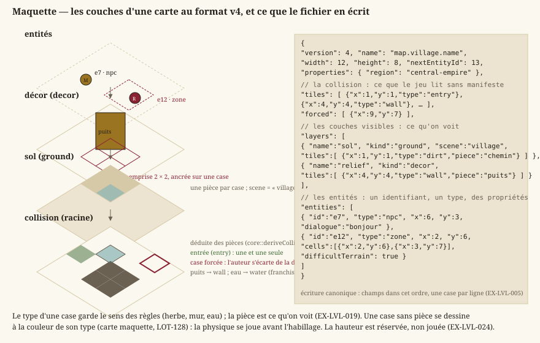
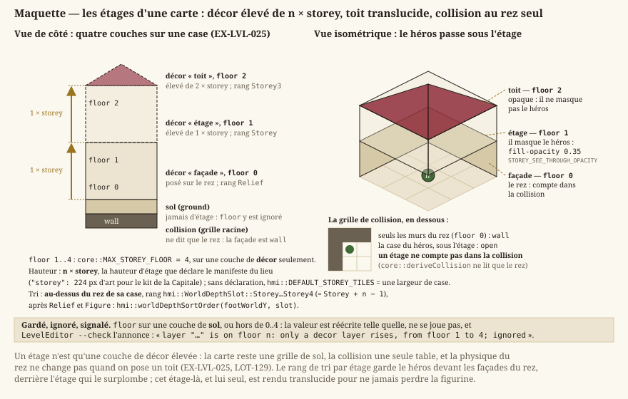
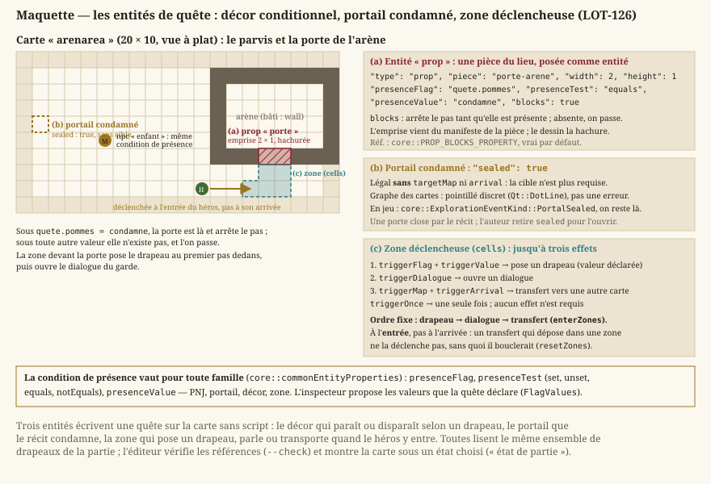
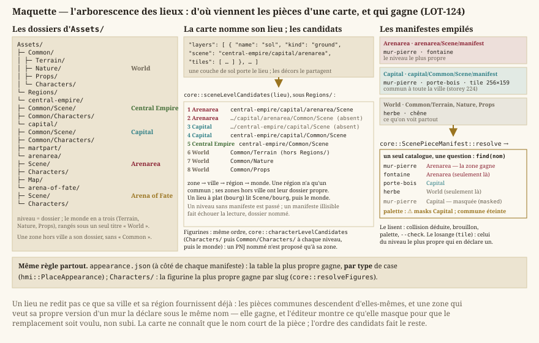

Cartes & format
Statut : format v5 livré au
LOT-1018(jadg-map: une description par carte, ce que Core joue et ce que le moteur construit, étages praticables, volumes ; construite en niveau parscripts/maps/build_level.py, relue parscripts/maps/read_level.py; §2). Les quatre cartes de la démo (central-empire/capital/) sont migrées de la v4 telles quelles. La §1 décrit la grille et les entités, communes aux deux versions, et la v4, que Core lit toujours. Dépend degameplay.md. Schéma publié (v5) :Documentation/Specification/level.schema.json.
1. Représentation des cartes
Une carte est faite de couches empilées et d'une collision qui, elle, n'est pas une couche comme les autres : elle se déduit des pièces posées, et l'auteur ne la corrige qu'au cas par cas. La maquette montre cet empilement et, en regard, ce que le fichier en écrit.


Deux idées de ce dessin commandent tout le reste du document : le type d'une case porte le sens des règles — herbe, mur, eau —, tandis que la pièce ne porte que ce qu'on voit ; et la collision se déduit, si bien qu'une carte reste jouable avant d'être habillée.
- EX-LVL-001 — Une carte doit être décrite par un fichier de données externe (pas en dur dans le code), placé dans
Source/Elements/Levels. - EX-LVL-002 — Le format doit décrire au minimum : dimensions de la grille, type de chaque tuile, position d'entrée, couches visibles et entités.
- EX-LVL-003 — Le format retenu est un JSON structuré orienté objets : une carte est un objet JSON portant ses métadonnées (nom, dimensions) et une liste de tuiles, chaque tuile étant un objet
{x, y, type, …}(les cases vides sont omises) pouvant porter des champs propres (la pièce nommée par une case de couche,"piece",EX-LVL-019). Choisi pour un format extensible (données riches par tuile, round-trip d'éditeur direct), au prix d'une lisibilité « à l'œil » moindre qu'une grille ASCII — l'édition passe par l'éditeur, pas par le texte brut. - EX-LVL-005 — Le fichier de carte doit porter un numéro de version de format, afin qu'une évolution non rétrocompatible soit détectée plutôt que subie. Un fichier sans numéro de version est lu comme la version initiale, sans erreur ni avertissement ; une version supérieure à celle gérée est refusée avec un message explicite. Toute version passée se lit pour toujours (une fixture par version reste dans les tests) ; la conversion est un acte explicite (
LevelEditor --migrate,EX-EDIT-062), jamais l'effet de bord d'un enregistrement ; l'écriture est canonique : charger puis enregistrer une carte intacte rend le même fichier, octet pour octet. - EX-LVL-004 — Le chargement d'une carte doit valider les données (positions des tuiles et des entités dans les bornes
width × height, une seule tuile par case, une et une seule entrée, types de tuile connus) et signaler une erreur exploitable en cas de fichier invalide (cf. politique d'erreurs des conventions). - EX-LVL-016 — Une carte doit porter N couches de tuiles typées plutôt qu'une grille unique : un RPG en vue de dessus superpose un sol (herbe, dalle, eau), un décor (arbre, tonneau, tapis) et une collision — masque indépendant du visuel, un tapis se traverse et un tonneau non. La grille de collision d'une carte est son tableau racine
tiles, celui qui porte déjà l'entrée — déduite des couches visibles depuis la v4 (EX-LVL-020) : le tableaulayersne décrit que les couches visibles, et une couche de rôlecollisionqui y serait déclarée est refusée — deux grilles à tenir d'accord se désynchronisent, et c'est celle qu'on ne voit pas qui gagne. Au chargement, la grille racine est promue en couche de tête, pour que tout consommateur boucle sur les couches sans cas particulier. Un fichier sans tableaulayersse charge, sa grille promue en couche unique dite legacy, à la fois décor et collision. Concrétisé enLOT-04. - EX-LVL-017 — Une carte doit porter une liste d'entités — PNJ, coffres, panneaux, portails, rencontres — distincte de ses grilles : une entité est un objet à type libre, placé sur une case et porteur de ses propres données, là où une grille ne retient qu'un type par case. Le type n'est pas interprété au chargement — c'est le gameplay qui lui donne un sens — mais la position est validée comme celle d'une tuile (
EX-LVL-004). Concrétisé enLOT-04. - EX-LVL-018 — Une couche et une entité doivent pouvoir porter un dictionnaire de propriétés libres, et tout champ inconnu du chargeur doit y être rangé : ignoré sans erreur à la lecture, et réémis à l'écriture. Sans quoi le moindre besoin découvert plus tard — terrain difficile, couverture, hauteur, dialogue d'un PNJ — imposerait une nouvelle version de format et la migration de tout le contenu déjà produit. Concrétisé en
LOT-04.
Format v4 (LOT-EDITOR-12)
La seule révision de format du module éditeur, faite tant qu'il n'y avait que trois cartes.
- EX-LVL-019 — Chaque case d'une couche visible porte son type et une pièce facultative de la planche du lieu (
"piece"). Le type ne garde qu'un sens, celui des règles et du générateur ; la pièce est ce qu'on voit, et la table d'apparence du lieu n'en est que le défaut (cartes générées, case sans pièce). Une pièce large est ancrée sur une case et occupe son emprise vers les colonnes et lignes croissantes ; elle se trie au pied de son emprise (core::footprintCells, une seule règle, lue par la composition du jeu et par la déduction de collision). Une pièce se cite par son nom courant ou par un ancien nom (aliasesdu manifeste) ; une pièce introuvable reste dans le fichier. - EX-LVL-020 — La grille de collision est écrite dans le fichier — le jeu la lit sans manifeste — et égale à sa déduction (
core::deriveCollision) hors des cases que l'auteur a forcées ("forced"). La déduction prend, case par case, la contribution la plus forte du type tactique de chaque pièce qui la couvre (tacticalau manifeste :open,difficult,cover,obstacle,solid), de la règle du type d'une case sans pièce, et fait d'une case que rien ne couvre un mur. Gêne et abri ne sont pas encore joués depuis une pièce : déduits franchissables, signalés par le contrôle. - EX-LVL-021 — Chaque entité porte un identifiant court (
"id"), unique dans la carte, donné par l'éditeur et jamais réemployé (compteur"nextEntityId") : quêtes, drapeaux et sauvegardes citent une entité parcarte#id, pas par sa case. Deux entités du même identifiant sont refusées au chargement. - EX-LVL-022 — Une zone (
"type": "zone") est un rectangle (width×heightdepuis sa case) ou un ensemble de cases peint ("cells") ; ses propriétés s'appliquent à chaque case couverte, etcore::zoneCellslit les deux formes. - EX-LVL-023 — Une carte peut être la variante d'une autre (
"base") : elle ne porte aucune case, reprend celles de sa base, change de planche ("scene") et porte ses propres entités. Sa base se cherche du dossier de la variante vers la racine ; une base elle-même variante est refusée. - EX-LVL-024 — La hauteur par case est réservée :
"elevation"par case de couche et par entité, lue, gardée et réécrite ; ni le jeu ni l'éditeur ne s'en servent, et le contrôle signale toute valeur non nulle."floor"par couche, réservé jusqu'auLOT-129, est joué parEX-LVL-025. Une carte v5 refuse l'une et l'autre (D-51,EX-LVL-032). - EX-LVL-025 — Une couche de décor à l'étage
"floor"n (1 à 4) est un étage : ses pièces se dessinent élevées de n hauteurs d'étage, que déclare le manifeste de leur lieu ("storey", en pixels d'art), triées au-dessus du rez de leur case ; un étage qui masque le héros se dessine translucide. Un étage ne compte pas dans la collision, qui ne dit que le rez. Un étage sur une couche de sol, ou hors de 0 à 4, est gardé mais ignoré, et le contrôle le signale (LOT-129). La migration en v5 fait de cet étage de décor une hauteur en mètres (z, 3 m par étage, provisoire) ; l'étage praticable est celui de la v5 (EX-LVL-032).


Ce que la maquette fixe : un étage est une couche, jamais une propriété de case, et il ne change rien à ce qui bloque. La décision D-21 tient donc toujours — un niveau jouable est une carte, reliée par portail à l'étage du dessous — et l'étage du LOT-129 n'est qu'un décor élevé : on passe dessous, on n'y monte pas.
Ce que la quête pose sur une carte (LOT-126)
Une quête change ce qu'une carte montre et ce qu'elle laisse passer : une porte se condamne, un PNJ paraît, une zone déclenche. Le format v4 le porte sans champ nouveau — une entité, ses propriétés libres (EX-LVL-018), et la condition de présence du LOT-116 (EX-EXP-009).


- EX-LVL-026 — Une entité de famille
proppose une pièce du lieu comme entité : présente, elle se compose à sa case comme une pièce de décor et son emprise (width×height, prise au manifeste quand on choisit la pièce) arrête le pas siblocks(vrai par défaut) ; absente sous les drapeaux, on la traverse. Sans pièce dessinable — une carte maquette —, elle s'extrude en mur. La règle qui la justifie : ce qui change en cours de partie est une entité, tout le reste une pièce de couche — sinon une porte qui s'ouvre demanderait de réécrire la couche de décor et sa collision déduite, que la sauvegarde ne sait pas porter. - EX-LVL-027 — Un portail condamné (
sealed) est légal sans cible ni point d'arrivée : il se pose, se montre en pointillé au graphe du monde, et ne se franchit jamais — la session répond « portail condamné » quand on marche dessus. C'est le seul moyen de dessiner une porte qui n'ouvre sur rien encore sans que--checkexige une carte qui n'existe pas, et sans qu'un joueur tombe dans une carte vide. - EX-LVL-028 — Une zone peut déclencher, à l'entrée du héros et jamais à son arrivée par transfert, un drapeau posé (
triggerFlag, avectriggerValuesi le drapeau est déclaré à valeurs), un dialogue (triggerDialogue) ou un transfert vers une carte et un point d'arrivée (triggerMap+triggerArrival), dans cet ordre ;triggerOncela fait agir une seule fois par partie, par un fait fabriqué comme celui d'un coffre ouvert. Un transfert est une arête du graphe du monde et compte pour l'atteignabilité que--checkvérifie (EX-EDIT-079). Déclencher à l'arrivée ferait boucler tout transfert qui dépose dans une zone. - EX-LVL-029 — Le lieu d'une carte (
"scene") est un chemin dans l'arborescence des lieux (central-empire/capital/arenarea), et ses pièces se cherchent du plus propre au plus commun : la zone, puis la ville, la région et le monde (core::sceneLevelCandidates,core::ScenePieceManifest::resolve). Une pièce propre masque la commune du même nom ; les tables d'apparence et les figurines s'empilent de même. Sans cet héritage, chaque quartier recopierait le kit de sa ville, et corriger un mur de la Capitale demanderait de le corriger dans chaque quartier —LOT-124. - EX-LVL-030 — Le chargeur refuse une carte dont un côté dépasse 1024 cases (
core::MAX_LEVEL_SIDE) avant d'allouer sa grille. L'éditeur plafonne ses cartes bien plus bas (EX-EDIT-017) ; cette borne-ci ne sert qu'à écarter un fichier aberrant — le fuzzing y trouvait une carte de dix gigaoctets — sans jamais contraindre une carte qu'un auteur dessinerait.
Format retenu (JSON, liste de tuiles-objets)
Types de tuiles : entry (entrée, point d'arrivée par défaut), solid (matière pleine), et le terrain du RPG (EX-EXP-005) — grass, dirt, sand, water, deepWater (sols ; l'eau profonde bloque), wall, cliff (obstacles), bridge, stairs (passages). Le vocabulaire de la maquette les étoffe, pour qu'une carte sans texture se dessine avec précision :
| Famille | Types | Pas |
|---|---|---|
| Sols | pavement, alley, planks, flagstone, snow | traversables |
| Terrain difficile | mud, rubble, bush | traversables (la gêne n'est pas encore jouée ; --check avertit) |
| Abri | lowWall | traversable (l'abri n'est pas encore joué ; --check avertit) |
| Passage | door | traversable |
| Arrêtent le pas, pas la vue | rock, fence, stall, crate, pit, lava | déduits en cliff |
| Arrêtent le pas et la vue | tree, column, roof, tiers | déduits en wall |
Une case vide n'est pas listée (absence = vide).
Une case de couche peut nommer sa pièce ("piece", EX-LVL-019), la pièce de la planche du lieu (EX-VIS-008) dessinée sur cette case. Une carte v3 portait cette pièce sur la grille racine ("texture") : le chargeur la range sur la couche de décor, et une v4 qui en porte encore une est refusée. Écriture canonique : champs dans cet ordre, une case par ligne.
{
"version": 4,
"name": "Village",
"width": 12,
"height": 8,
"nextEntityId": 3,
"tiles": [
{"x": 1, "y": 1, "type": "entry"},
{"x": 4, "y": 4, "type": "wall"}
],
"forced": [
{"x": 9, "y": 7}
],
"layers": [
{
"name": "sol",
"kind": "ground",
"scene": "village",
"tiles": [
{"x": 1, "y": 1, "type": "dirt", "piece": "chemin"}
]
},
{
"name": "relief",
"kind": "decor",
"tiles": [
{"x": 4, "y": 4, "type": "wall", "piece": "puits"}
]
}
],
"entities": [
{
"id": "e1",
"type": "npc",
"x": 6,
"y": 3,
"dialogue": "bonjour"
},
{
"id": "e2",
"type": "zone",
"x": 2,
"y": 6,
"cells": [
{"x": 2, "y": 6},
{"x": 3, "y": 7}
],
"difficultTerrain": true
}
]
}Une variante ne porte que version, name, base, scene, nextEntityId et entities (EX-LVL-023). Rôles de couche reconnus : ground, decor, et legacy (rôle de la grille racine promue, jamais écrit) ; un rôle inconnu retombe sur ground plutôt que de faire échouer la carte (EX-NFR-040), et collision déclaré est refusé (EX-LVL-016). La propriété de couche scene nomme le lieu dont la carte porte les planches, par son chemin dans l'arborescence des lieux (Assets/Regions/<région>/<ville>/<zone>/Scene/, EX-LVL-029) ; une couche de décor porte en outre son étage ("floor", EX-LVL-025).


Familles d'entités posées par l'éditeur (LOT-11, EX-EDIT-050). Le chargeur ne connaît aucun type d'entité (EX-NFR-040) ; l'éditeur, lui, sait poser et renseigner ceux que le gameplay lit, rassemblés dans core::knownEntityKinds (Source/Core/World/EntityKinds.h) :
type | Propriétés | Lue par |
|---|---|---|
chest | — | core::knownInteractableKinds (LOT-10) |
sign | — | core::knownInteractableKinds (LOT-10) |
npc | dialogue, figure (figurine de l'atelier), guards (fiche de lieu du quartier gardé) | core::dialogueTriggerFor (LOT-15), rendu du lieu |
encounter | encounterId (requis), respawns (booléen) | core::encounterTriggerFor (LOT-18) |
portal | targetMap, arrival — requis, sauf portail condamné ; requiresFlag ; sealed (booléen : posé, jamais franchi, EX-LVL-027) | graphe du monde (LOT-09, LOT-126) |
spawnPoint | name (requis, unique dans la carte) | graphe du monde (LOT-09) |
combatZone | name, width, height — requis | découpe de la carte où le combat se joue (LOT-09) |
cityBlock | name, width, height — requis | plan de ville (LOT-96) |
arenaEntry | side (allies ou enemies), rank (entier, au moins 1) | core::arenaEntryPoints (LOT-50) |
| toute famille | presenceFlag, presenceTest (set, unset, equals, notEquals), presenceValue (a\|b, des valeurs qu'une quête déclare) — la condition de présence | core::isEntityPresent (LOT-116, EX-EXP-009) ; déclarée au contrat (core::commonEntityProperties) au LOT-126 |
zone | width, height (rectangle) ou cells (peinte) ; name, difficultTerrain ; ses déclencheurs (EX-LVL-028) : triggerDialogue, triggerFlag + triggerValue, triggerMap + triggerArrival, triggerOnce | core::SimulatedSpace::fromLevel (LOT-1017), core::ExplorationSession (LOT-126) |
prop | piece (requis, une pièce du lieu), blocks (booléen, vrai par défaut), width, height — l'emprise de la pièce (EX-LVL-026) | core::ExplorationSession, hmi::snapshotWorldScene (LOT-126) |
route | name (requis), loop (booléen, une ronde) ; ses points dans cells, dans l'ordre | personne encore : le LOT-70 et le LOT-82 (LOT-EDITOR-05) |
Chaque famille déclare aussi sa forme sur la carte — point, rectangle (width × height, au moins 1), zone rectangle ou peinte, trajet —, la propriété que l'éditeur écrit à côté d'elle et celle qui nomme sa figurine : l'éditeur les dessine et les manipule par là, sans code par famille (EX-EDIT-070). Toute famille que le jeu lit doit être dans la table ; un test bloquant le vérifie (EX-EDIT-073).
L'identifiant d'une carte est le chemin de son fichier sous Source/Elements/Levels/, sans extension (central-empire/capital/martpart, central-empire/capital/arenarea/arena-of-fate). Un portail désigne sa destination par (carte, point d'arrivée nommé), jamais par des coordonnées, qui se désynchroniseraient au premier redimensionnement de la carte cible (EX-EDIT-052) :
{ "type": "portal", "x": 11, "y": 4, "targetMap": "foret", "arrival": "lisiere-est" }
{ "type": "spawnPoint", "x": 1, "y": 4, "name": "porte-ouest" }Coordonnées x = colonne, y = ligne, origine haut-gauche ; toute tuile hors des bornes width × height est invalide.
2. Le format v5, jadg-map, et sa chaîne (LOT-1018)
Le format v4 est une grille de cases : sans rotation ni terrain, il ne porte pas la ville de l'atlas (D-51). La v5 garde ce que la v4 avait de juste — une carte est un fichier texte, la grille de collision et les entités que Core joue, les identifiants qui ne changent jamais — et y ajoute ce que le moteur construit. Le texte est la source, le niveau du moteur une sortie (D-52) : la description est ce que Git relit, ce que les contrôles lisent, ce que l'assistant écrit.
- EX-LVL-031 — Une carte du jeu est une seule description au format
jadg-map, version 5, qui se déclare ("format": "jadg-map","version": 5) et dit à la fois ce que Core joue — la grille de collision du rez (tiles,forced), les couches de pièces posées sur les cases (layers), les entités sur leurs cases (entities) — et ce que le moteur construit : le terrain (terrain,routes,outlines), les objets à transformation libre (objects: un maillage, sa position en mètres, son lacet, son tangage, son roulis, son échelle, son étage), les dallages (fills), les préfabriqués (prefabs), les personnages (party, l'apparence d'un PNJ,characters), les lumières (celles des objets, l'entitélight), le ciel (lighting,daylight,ground), la navigation (navigation), les cadrages (shots,hours) et les notes de l'auteur (notes). Son repère : x vers l'est (les colonnes), y vers le sud (les lignes), z vers le haut, en mètres ; une case fait 1,5 m ; le coin de la case (0, 0) tombe enorigin. Un lacet tourne le sud vers l'est, un tangage lève l'est, un roulis lève le sud, appliqués dans cet ordre : roulis, tangage, lacet. La description s'écrit sous une forme canonique (scripts/maps/jadg_map.py) : une case, un objet, une entité par ligne ; la relire puis la réécrire intacte rend le même fichier. Schéma :level.schema.json. - EX-LVL-032 — Un lieu à plusieurs étages est une seule carte (D-51). La carte déclare ses étages praticables (
storeys: le rez à 0 m, puis des hauteurs croissantes) ; chaque entité nomme le sien (storey, 0 par défaut). Le moteur dit à Core l'étage où il a mené le héros, lu à la hauteur de ses pieds (core::ExplorationIntent::storey,AJadgMapFrame::StoreyAt) : un portail, une zone, un coffre ne se franchissent, ne se déclenchent, ne se sollicitent que de leur étage — à la verticale du portail du rez, le héros de l'étage passe. Un point d'arrivée pose le héros à son étage. La file du groupe suit en hauteur : la trace porte la hauteur de chaque pas (core::FollowTrail::heightBehind). Les réserves de la v4 tombent :elevation(par case, par entité) etfloor(par couche) sont refusés dans une v5 ; une couche de pièces se pose à sa hauteur en mètres (z). - EX-LVL-033 — Une entité peut porter un volume (
volume:minetmax, en mètres dans le repère de la carte) : la zone de combat, le marqueur de rencontre. Le chargeur de Core le ramène au repère de la grille (core::MapVolume) ; la grille tactique d'une zone de combat est faite des cases dont le centre tombe dans l'emprise au sol du volume (core::volumeCells,core::combatZoneOf). Le niveau construit montre chaque volume par une boîte (JadgVolume:<id>). - EX-LVL-034 — Le niveau d'une carte se construit par script, sans fenêtre (
scripts/maps/build_level.py, commandletpythonscript), sous/Game/Maps/Levels/<carte>— le chemin qu'un portail ouvre. Le terrain est unLandscapedont les hauteurs et les poids des couches de matière sont régénérés depuis la description (formes de relief, contours qui mettent à une hauteur ou peignent une couche, routes) et écrits en images sousSaved/Jadg/levels/<carte>/, jamais peints ; l'eau d'un contour est un plan à son niveau. Les couches de pièces se posent par instances (une couche et une pièce par acteur), chaque pièce du kit du lieu au centre de son emprise (jadg_map.resolve_piece, du lieu vers le monde) ; une pièce introuvable reste dans le texte et se compte. Chaque objet est un acteur (JadgObject:<id>) ; chaque entité a son repère (JadgMarker:<id>). Rejouée sur la même description, la construction rend le même niveau : son empreinte (Saved/Jadg/levels/<carte>.json— chaque acteur par son étiquette, sa classe, sa transformation arrondie, son maillage, ses réglages) est la même. - EX-LVL-035 — L'éditeur du moteur sert à placer à la souris ce qu'un script place mal ;
scripts/maps/read_level.pyramène ce geste-là dans le texte, et rien d'autre. Ce qu'il relit est la frontière de l'éditeur (tableau ci-dessous) ; ce qui ne se relit pas ne se fait pas dans l'éditeur :build_level.pyle referait tel que le texte le dit. Une valeur relue qui ne diffère de l'écrite que par l'arrondi (0,1 mm, un millième de degré) garde l'écrite. L'aller-retour — construire, retoucher par l'API de l'éditeur comme à la souris, relire, reconstruire : la même empreinte que le niveau retouché — est un contrôle du build (scripts/maps/check_level_roundtrip.py). - EX-LVL-036 — Le contrôle de contenu des cartes se fait à trois niveaux : le texte (
scripts/maps/jadg_map.py --check, en CI) — le schéma, les identifiants, les bornes, les étages, les portails appariés (la carte et le point d'arrivée visés existent ; la carte visée a un passage qui revient), les arrivées citées, les zones nommées et sans doublon, les cases inatteignables au rez depuis l'entrée et les points d'arrivée, la forme canonique ; Core (JadgContentCheck) — chaque carte se lit parcore::LevelLoader, le graphe des portails se valide (core::validateWorldGraph) ; le niveau construit (build_level.py -JadgCheck) — chaque point d'arrivée et chaque entrée d'arène est atteint depuis l'entrée sur le maillage de navigation ; une case inatteignable y est une zone inatteignable. - EX-LVL-037 — Un préfabriqué est un acteur composé déclaré en texte (
Source/Elements/Editor/Prefabs/<niveau>/<nom>.json, formatjadg-prefab, version 1) : des objets autour d'une origine, par maillage (mesh) ou par pièce du kit de son lieu (piece). Une carte le pose (prefabs: sa place, son lacet, son échelle) ; le niveau en fait unAJadgPrefabet ses objets attachés. Le préfabriqué se retouche dans son fichier ; l'éditeur ne relit que sa place. - EX-LVL-038 — Le mode Quêtes montre une carte telle qu'elle est à une étape de quête (
scripts/maps/quest_mode.py), sur les mêmes JSON que le jeu : ce qui est présent sous des drapeaux, par la règle de Core (EX-EXP-009), et les drapeaux que la carte lit sans qu'aucune quête ni aucun dialogue ne les déclare (contrôlé en CI) ; dans l'éditeur, il cache les acteurs des entités absentes, sans rien changer au niveau ni au texte. - EX-LVL-039 — Une carte v4 de l'ancien dépôt se migre en v5 par un acte explicite (
jadg_map.py --migrate) : la grille, les couches et les entités ne changent pas — les identifiants non plus, si bien que les quêtes et leurs tests ne changent pas —, l'étage de décor d'une couche devient sa hauteur, les notes de l'éditeur (<carte>.editor.json) entrent dans la description, le groupe, le ciel, la navigation et un cadrage s'ajoutent. Core lit toujours la v4 (EX-LVL-005) ; il ne l'écrit plus que pour ses tests (core::LevelWriter).
La frontière de l'éditeur
| Ce qu'on fait dans l'éditeur | Relu | Comment |
|---|---|---|
| Déplacer, tourner (lacet, tangage, roulis), mettre à l'échelle un objet | oui | objects[] : position, yaw, pitch, roll, scale ; un objet mis à une hauteur (height) ne relit que sa position et son lacet |
| Supprimer un objet | oui | il quitte objects |
| Déplacer, tourner, mettre à l'échelle un préfabriqué posé | oui | prefabs[] : position, yaw, scale |
| Déplacer le repère d'une entité | oui | sa case (x, y) et son étage (storey) |
| Redimensionner la boîte d'un volume | oui | volume |
| Régler un cadrage | oui | shots[] : target, heading, pitch, distance |
| Ajouter un acteur, changer un maillage, retoucher un objet d'un préfabriqué | non | dans le texte |
| Sculpter ou peindre le terrain, toucher une couche de pièces, un dallage | non | terrain, routes, outlines, layers, fills |
| Régler une lumière, le ciel, un réglage de rendu, la navigation | non | lighting, l'objet ou l'entité light, navigation |
| Changer les propriétés d'une entité (dialogue, condition, portail) | non | entities[] |
Exemple
{
"format": "jadg-map",
"version": 5,
"name": "Essai1018Etages",
"width": 16,
"height": 12,
"origin": [0.0, 0.0],
"storeys": [
{"name": "rez", "z": 0.0},
{"name": "etage", "z": 3.0}
],
"nextEntityId": 6,
"tiles": [
{"x": 2, "y": 6, "type": "entry"}
],
"entities": [
{"id": "e1", "type": "portal", "x": 11, "y": 7, "arrival": "palier", "targetMap": "essai/etages"},
{"id": "e3", "type": "spawnPoint", "x": 9, "y": 2, "storey": 1, "name": "palier"},
{"id": "e4", "type": "sign", "x": 11, "y": 7, "storey": 1}
],
"objects": [
{"id": "rampe", "mesh": "Scene/ilot/wall.glb", "position": [9.134164, 3.0, 1.231672], "pitch": 26.565051, "scale": [4.472136, 2, 0.126811]}
],
"party": {"appearances": ["heros-brawler", "heros-mage", "heros-priest", "heros-scoundrel"], "walkSpeed": 3.0},
"navigation": {"area": [0.0, 0.0, 24.0, 18.0], "height": 7.0},
"shots": [
{"id": "etages", "target": [12.0, 9.0, 1.5], "heading": 30.0, "pitch": 38.0, "distance": 26.0}
],
"hours": ["12:00", "22:00"]
}3. Conception (lignes directrices)
- Chaque carte doit être franchissable : aucune zone jouable ne doit être inatteignable.
- Aucune situation sans issue : un portail mène toujours quelque part, et l'on peut revenir.
- Toute carte doit être un terrain tactique valide (
EX-EDIT-054) : le combat se joue dessus.
Exigences retirées
Ancres conservées, jamais renumérotées : les lots livrés s'y réfèrent. Les six premières décrivaient une campagne de tableaux ordonnés ; le jeu est un bac à sable, relié par le graphe de cartes du
LOT-09et retenu par la sauvegarde duLOT-17.
- EX-LVL-010 (retirée en
LOT-67) — ordre de chargement des niveaux. - EX-LVL-011 (retirée en
LOT-67) — enchaînement automatique des niveaux. - EX-LVL-012 (retirée en
LOT-67) — niveaux de démonstration à difficulté croissante. - EX-LVL-013 (retirée en
LOT-67) — séquence de niveaux en donnée de contenu. - EX-LVL-014 (retirée en
LOT-67, remplacée par la sauvegarde duLOT-17) — progression par tableau. - EX-LVL-015 (retirée en
LOT-67, reprise par leLOT-49) — couverture de toutes les mécaniques par le contenu livré. - EX-LVL-006 (retirée au
LOT-88) — mode de cadrage de caméra par niveau. - EX-LVL-007 (retirée au
LOT-88) — zones de caméra dessinées à la main. - EX-LVL-008 (retirée au
LOT-88) — route des plateformes mobiles et capacités par niveau. - EX-LVL-009 (retirée au
LOT-88) — liste des plans picturaux et parallaxe.
Traçabilité
La v5 (LOT-1018) : son écriture, son contrôle et sa migration relèvent de scripts/maps/jadg_map.py, sa construction de scripts/maps/build_level.py (et de UJadgSceneBuild, AJadgPrefab, AJadgMapFrame), sa relecture de scripts/maps/read_level.py, l'aller-retour de scripts/maps/check_level_roundtrip.py, le mode Quêtes de scripts/maps/quest_mode.py ; Core la lit (core::LevelLoader, core::Storey, core::MapVolume, core::ExplorationIntent::storey). Ce qui suit est la v4. Le chargement et la validation relèvent de Source/Core (core::LevelLoader, core::LevelWriter, core::deriveCollision) ; la résolution des lieux, de core::sceneLevelCandidates et core::ScenePieceManifest::resolve (EX-LVL-029) ; la migration et le contrôle de toutes les cartes, de l'éditeur (LevelEditor --migrate, --check, EX-EDIT-062) ; les fichiers de cartes sont dans Source/Elements/Levels. Types de tuiles : gameplay.md ; exploration : exploration.md.